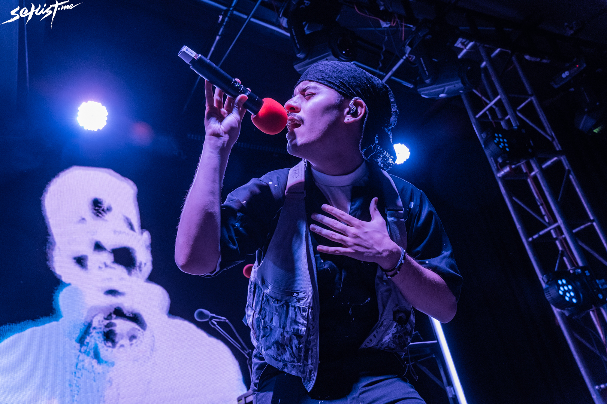
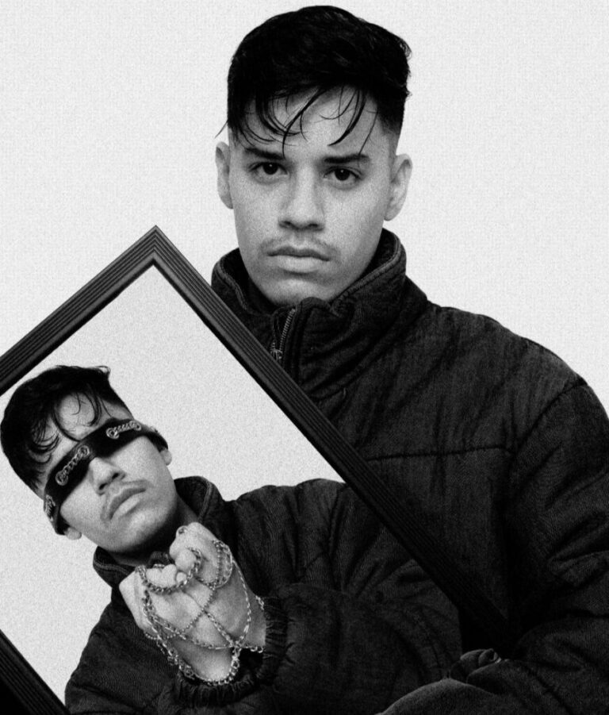
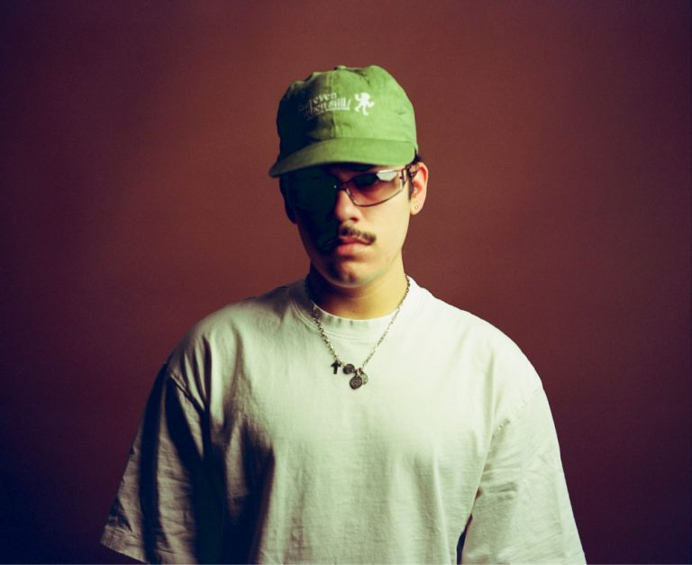

Rodrigo Cárdenas, mejor conocido como NSQK (pronunciado como "Nesquik"), es un productor, cantante y compositor originario de Monterrey, México. Se ha convertido en una de las figuras más frescas del R&B alternativo y el Indie Pop en español.

Su música mezcla texturas electrónicas con letras profundamente emocionales. Con álbumes como ROY y Braille, ha demostrado una capacidad increíble para explorar la vulnerabilidad, el amor y el existencialismo bajo una estética visual impecable.

NSQK no solo canta; él crea mundos. Desde su etapa en el colectivo "Noa Noa" hasta su carrera en solitario, ha redefinido lo que significa ser un artista independiente en la era digital, cuidando cada detalle de su arte.